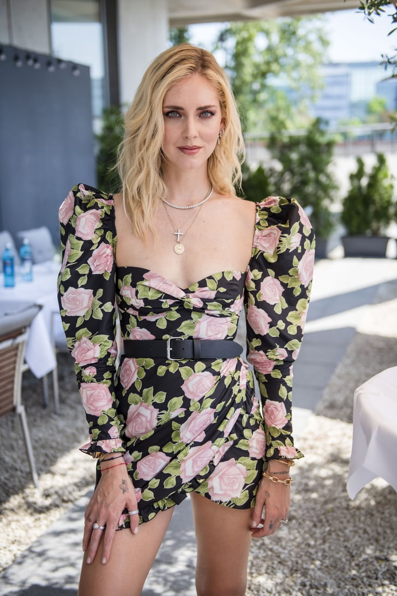
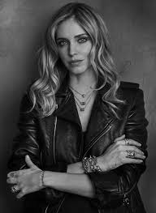
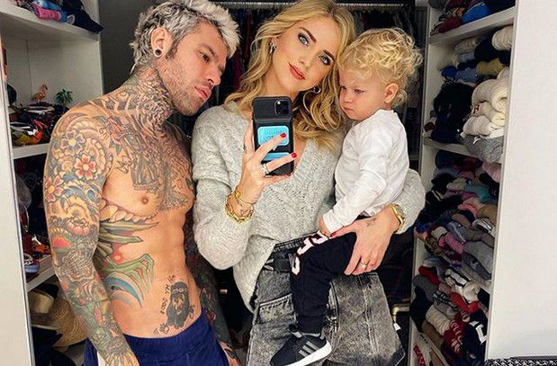
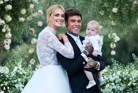
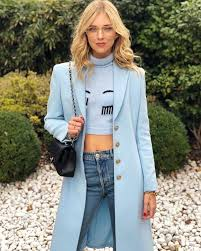

 Chiara Ferragni is an Italian entrepreneur, fashion blogger, influener, and designer. Her blog is called The Blonde Salad has allowed her to collaborate with many fashion and beauty brands. In 2017, Forbes ranked her the "Top Fashion Influencer. “I would like to create something that I can wear and my mother can wear and my younger sisters can wear,” Ferragni says of her interest in the family brand. Are we talking about a desire to emulate the Kardashians here? She laughs. “Maybe — in the future”.
   